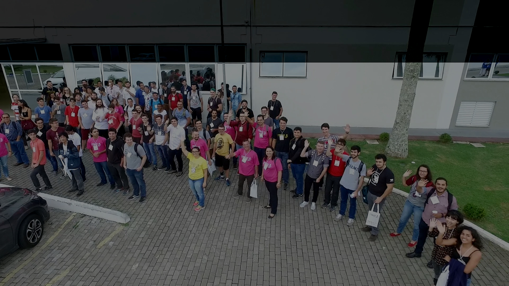

Conheça o evento
11º Edição
A Universidade do Vale do Itajaí – UNIVALI e a EMCT- Escola do Mar, Ciência e Tecnologia, através dos seus cursos de Ciência da Computação Campus Kobrasol e Engenharia de Computação do Campus Itajaí realizam anualmente o COMPUTER ON THE BEACH.
Trata-se de um evento técnico-científico que visa reunir profissionais, pesquisadores e acadêmicos da área de computação, a fim de discutir as tendências de pesquisa e mercado da computação em suas mais diversas áreas.
O evento procura unir o útil ao agradável em prol de um intercâmbio de experiências, discutindo de maneira informal, porém técnica, misturando atividades técnico-científicas com atividades de lazer, ao ar livre, das quais se pode desfrutar das belezas de Florianópolis durante o verão.
Em 2019, esperamos por você para aproveitar conosco a 10ª edição do Computer on the Beach.
Turma do evento Computer on the Beach 2019
Atividades 2020
Palestras
ABERTURA: Você é mesmo feliz?
Palestrante: Robson Freire (UNIVALI).
Local: Auditório
Data / Horário: 01/06/2020 às 16:00 hrs.
Para o Professor Robson Freire falar de felicidade é um papo sério. Todo mundo quer ser feliz, não quer? Vivemos nesta busca incessante e a cada dia, cada minuto, cada segundo somos bombardeados por uma série de informações que nos dizem que devemos e precisamos ser felizes. Diversos estímulos – dinheiro, amor, sexo, peso, joias, status, desempenho acadêmico e profissional, ou tamanho da casa – podem influenciar muito ou pouco a nossa satisfação com a vida.

2ª PALESTRA: Tratando milhões de eventos de missão crítica por mês em tempo real.
Palestrante: Michel Reips (Segware)
Local: Auditório
Data / Horário: 01/06/2020 às 16:00 hrs.

3ª PALESTRA: A proteção dos dados pessoais e as novas tecnologias: caos ou oportunidades?
Palestrantes: Andrea Willemin e Ramicés da Silva.
Local: Auditório
Data / Horário: 01/06/2020 às 16:00 hrs.
4ª PALESTRA: Segurança da Informação em Cooperativas de Credito Sistema Sicoob.
Palestrante: Paulo Silva (Tracker Consultoria)
Local: Auditório
Data / Horário: 01/06/2020 às 16:00 hrs.
5ª PALESTRA: Para que serve uma blockchain e por que eu devo me preocupar com isto?
Palestrante: Alexandre Melo Braga (UNICAMP)
Local: Auditório
Data / Horário: 01/06/2020 às 16:00 hrs.
6ª PALESTRA: Papel da Inteligência Artificial e Máquinas de Aprendizado na CyberSegurança na atualidade.
Palestrante: Rafael Righi (Suntech).
Local: Auditório
Data / Horário: 01/06/2020 às 16:00 hrs.

Workshop
Threat Defense Workshops
Ministrantes: Amanda Veras e Tatiana Borher.
Local: Auditório
Data / Horário: 01/06/2020 às 16:00 hrs.
O Threat Defense Workshop trata-se de uma simulação de ciberataque, para “pensar como hacker” e aprender como proteger-se! É extremamente difícil fazer uma simulação de um ciberataque no dia a dia, por isso estamos convidando-o(a) para executar esse ciberataque em um ambiente controlado, com as mesmas ferramentas e técnicas usadas pelos hackers e, logo depois, planejar e implementar a segurança necessária para bloquear esse tipo de ataque.
Clique aqui para inscrição
Minicursos
MC1: Detectando dados úteis na Web e trabalhando com eles.
Palestrante: Carina F. Dorneles
Local: Sala 05
Data / Horário: 01/06/2020 às 16:00 hrs.
Neste minicurso, serão discutidas questões referentes à natureza, detecção e ao uso do “Big Data”, mais especificamente, do Big Data presente na Web.
Clique aqui para pré-inscrição
MC2: Introdução às tecnologias blockchain e suas aplicações
Palestrante: Alexandre Melo Braga (UNICAMP)
Local: Sala 05
Data / Horário: 01/06/2020 às 16:00 hrs.
Este minicurso aborda as tecnologias componentes de uma blockchain de modo introdutório e amplo, indo além das criptomoedas como o Bitcoin, proporcionando ao participante uma visão geral sobre o assunto.
Clique aqui para pré-inscrição